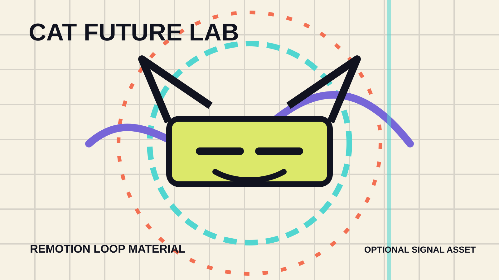

Anime.js timeline
Hero 入場、技術卡片 stagger、SVG path drawing 與狀態數字動畫。
Animation Design Final Project
這不是整體貓咪網站，而是一個未來互動實驗室。貓咪元素以耳形幾何、尾巴軌跡、貓眼 HUD 和 AI 導覽訊號出現，讓作品有記憶點但保持專業展示感。
Three.js Interactive Scene
中央是實驗室核心與資料軌道，貓咪只以耳形天線、眼形 HUD 和尾巴軌跡出現。滑鼠移動會影響場景角度，模式按鈕會調整粒子速度與光源節奏。
Week 13 Technique Stack
版面參考第十二週期末報告範本的案件安排，但視覺語言改成全新的 lab console、訊號板、資料軌道和高對比互動元件。
Hero 入場、技術卡片 stagger、SVG path drawing 與狀態數字動畫。
Scene、Camera、Renderer、材質、光源與 requestAnimationFrame 持續渲染。
瀏覽器只呼叫本機路由，Google AI key 留在 server `.env`。
使用 React video pipeline 製作 loop/poster/report clip，主網站保有 fallback。
Server Proxy Chat
送出後會呼叫 `POST /api/chat`。沒有 API key 時，server 回傳安全 fallback，仍能展示 API 流程與錯誤處理。
Remotion Material Slot
網站可直接使用 SVG poster；若執行 Remotion render，輸出的 loop 可替換這個展示區或作為期末報告開場片段。

Final Report Structure
上台可照這四段說明，從設計動機、互動技術、API 安全一路到 SEO 與無障礙驗收。